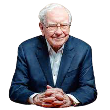

Warren Buffett
An American business magnate, investor, and philanthropist
Warren Buffett (born in Omaha in August 1930) is considered by some to be one of the most successful investors in the world.
Buffett was born in 1930 in Omaha, Nebraska. He was the second of three children and the only son of Leila (née Stahl) and Congressman Howard Buffett, Buffett began his education at Rose Hill Elementary School. In 1942, his father was elected to the first of four terms in the United States Congress, and after moving with his family to Washington, D.C., Warren finished elementary school, attended Alice Deal Junior High School and graduated from Woodrow Wilson High School in 1947, where his senior yearbook picture reads: "likes math; a future stockbroker." After finishing high school and finding success with his side entrepreneurial and investment ventures, Buffett wanted to skip college to go directly into business, but was overruled by his father.
In 2008 he was ranked by Forbes as the richest person in the world with an estimated net worth of approximately US$62 billion. In 2009, after donating billions of dollars to charity, Buffett was ranked as the second richest man in the United States with a net worth of US$37 billion with only Bill Gates ranked higher than Buffett. His net worth had risen to $58.5 billion as of September 2013.
In 1999, Buffett was named the top money manager of the Twentieth Century in a survey by the Carson Group, ahead of Peter Lynch and John Templeton. In 2007, he was listed among Time's 100 Most Influential People in the world. In 2011, President Barack Obama awarded him the Presidential Medal of Freedom. Most recently, Buffett, along with Bill Gates, was named the most influential global thinker in Foreign Policy's 2010 report.
Buffett has written several times of his belief that, in a market economy, the rich earn outsized rewards for their talents. His children will not inherit a significant proportion of his wealth. He once commented, "I want to give my kids just enough so that they would feel that they could do anything, but not so much that they would feel like doing nothing".
Buffett had long stated his intention to give away his fortune to charity, and in June 2006, he announced a new plan to give 83% of it to the Bill & Melinda Gates Foundation. He pledged about the equivalent of 10 million Berkshire Hathaway Class B shares to the Bill & Melinda Gates Foundation (worth approximately US$30.7 billion as of June 23, 2006) making it the largest charitable donation in history, and Buffett one of the leaders of philanthrocapitalism. The foundation will receive 5% of the total each July, beginning in 2006. (The pledge is conditional upon the foundation's giving away each year, beginning in 2009, an amount that is at least equal to the value of the entire previous year's gift from Buffett, in addition to 5% of the foundation's net assets.) Buffett joined the Gates Foundation's board, but did not plan to be actively involved in the foundation's investments.
This represented a significant shift from Buffett's previous statements, to the effect that most of his fortune would pass to his Buffett Foundation. The bulk of the estate of his wife, valued at $2.6 billion, went there when she died in 2004. He also pledged $50 million to the Nuclear Threat Initiative, in Washington, where he began serving as an adviser in 2002.
Timeline
- 1930 - Born in Omaha, Nebraska
- 1940 - The first visit the New York Stock Exchange.
- 1941 - Entry Into The Stock Market. Purchase six shares of Cities Service Preferred
- 1944 - Entry to the Business World. Purchase of 40 acres of farmland and Dividing up the land.
- 1947 - Graduates Highschool
- 1951 - Finishes Master's Degree
- 1956 - Creates his first investment partnership.
- 1961 - Makes his first million dollar investment, choosing to invest in a windmill manufacturing company.
- 1962 - Begins To Buy Berkshire Hathaway Shares
- 1967 - Worths more than $10 million. Briefly contemplates leaving the investing world to pursue other careers.
- 1970 - Buffett Names Himself Chairman of Berkshire Hathaway
- 1979 - Occupys a spot on Forbes' top 400 highest networth individuals list.
- 1983 - At the end of the financial year, Berkshire Hathaway has a stock portfolio worth just over $1.3 billion.
- 1987 - After a horrific October for the stock market, Berkshire Hathaway loses 25% of its value. He personally loses $342 million within the last two weeks of October.
- 1988 - Personally Investes In Coca-Cola.
- 2006 - Reveales that he would donate just over 80% of his fortune to various charities via annual gifts of stock, starting in July of 2006.
- 2008 - Becames the richest person in the world, with a total net worth estimated at $62 million by Forbes and at $58 billion by Yahoo.
If you want to find out more check out Warren Buffett's Wikipedia page